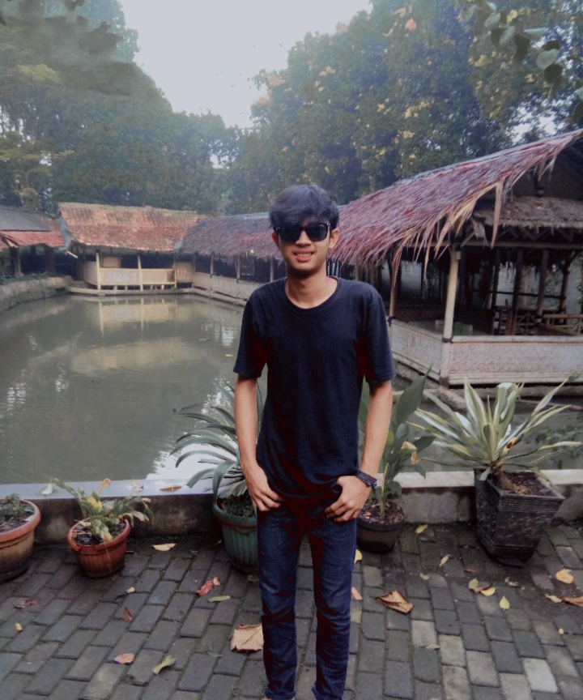

| DATA DIRI | KETERANGAN | FOTO |
| Nama | Rizwan Nur Saputra |  |
| Tempat/Tanggal Lahir | Bogor, 22 September 2002 | |
| Jenis Kelamin | Laki-Laki | |
| Agama | Islam | |
| Kewarganegaraan | Indonesia | |
| Status | Belum Kawin | |
| Alamat | Kp. Carang Pulang Rt 04 Rw 05 Desa Cikarawang, Kecamatan Dramaga. Kabupaten. Bogor 16680 | |
| Telepon | 0814 1094 9419 | |
| rizwanursaputra@gamail.com | ||
| Pendidikan | SDN Carang Pulang 02 SMP IT Nurul Fajar SMK PGRI 1 Kota Bogor |
|
| Kemampuan | Bermain Gitar | |
| Pengalaman Kerja | 1 Tahun Bekerja Di Rumah Makan Katineung | |